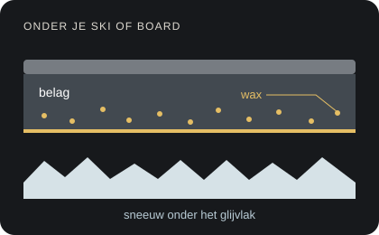
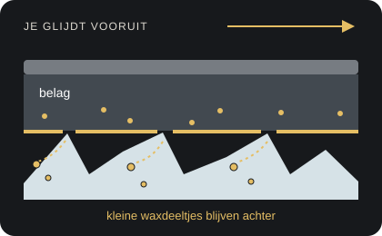
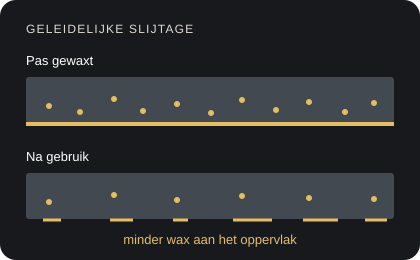

Persoonlijk ski- en snowboardonderhoud
Zorgeloos
Zorgeloos
skiplezier.
Kanten slijpen, belag repareren en waxen. Met aandacht onderhouden, klaar voor de sneeuw.
Woensdag brengen. Een week later ophalen.Of op afspraak · altijd eerst reserveren.
Waxen · slijpen · reparerenOnderhoud afgestemd op jouw materiaal
Brengen & ophalen in WamelWoensdag tot woensdag, of op afspraak · eerst reserveren
Kies je betaalwijzeiDEAL na reserveren of contant
Live per skigebied
Sneeuwtemperatuur op jouw bestemming
De sneeuwcondities worden opgehaald.
Buitenlocaties tonen een schatting op basis van de actuele luchttemperatuur op de vermelde modelhoogte en alleen wanneer het weermodel daar sneeuwdek ziet. De 7-daagse weersindicatie geeft alleen context en bepaalt de waxkeuze niet.
Waxkeuze: de actuele geschatte sneeuwtemperatuur is alleen een hulpmiddel. Voor recreatief gebruik zijn de praktische verschillen meestal beperkt. Bij skihallen gebruiken we de vermelde binnentemperatuur.
Voor ski’s én snowboards
Waxen, slijpen & repareren.
Grip op de piste, een verzorgd belag en soepel glijden. We kijken wat jouw materiaal nodig heeft en stemmen het onderhoud daarop af.
Kanten slijpen
We controleren de staalkanten, slijpen ze handmatig en verwijderen bramen. Zo helpen we de grip en controle op de piste te herstellen.
Ook los te boeken, zonder waxbeurt.
Ski’s vanaf € 24,95Snowboard vanaf € 29,95
Bekijk het slijppakket →
Belag repareren
Kleine, oppervlakkige beschadigingen vullen we en werken we handmatig vlak af. Bij grotere of diepere schade beoordelen we eerst wat mogelijk is.
Aanpak en eventuele extra kosten bespreken we vooraf.
Kleine reparatie vanaf € 7,50Grotere schade: prijs na beoordeling
Bekijk de reparatiemogelijkheden →
Waxen
We reinigen het belag, brengen Holmenkol hotwax aan en werken het glijvlak af door schrapen en borstelen. De wax kiezen we passend bij je reis.
Los of gecombineerd met slijpen en reparaties.
Ski’s vanaf € 19,95Snowboard vanaf € 24,95
Bekijk het waxpakket →
Prijzen inclusief btw. Ski’s zijn per paar; kleine reparaties per beschadiging. De definitieve werkzaamheden en kosten stemmen we vooraf af.
Voor ski’s en snowboards
Kies jouw onderhoud.
Van alleen kanten slijpen tot waxen en belagreparaties: kies wat je nodig hebt. Combineer meerdere pakketten in één aanvraag.
Waxen
Ski vanaf€ 19,95
Snowboard vanaf€ 24,95
Alle werkzaamheden
- Belag controleren en reinigen
- Holmenkol hotwax naar keuze
- Afkoelen en afschrapen
- Uitborstelen en finish
Bindingen demonteren + monterenOptioneel · € 7,50 per snowboard
Kanten slijpen en tunen
Ski vanaf€ 24,95
Snowboard vanaf€ 29,95
Alle werkzaamheden
- Staalkanten controleren
- Staalkanten handmatig slijpen
- Bramen verwijderen en kanten tunen
WaxsoortNiet inbegrepenDit pakket is alleen slijpen.
Bindingen demonteren + monterenOptioneel · € 7,50 per snowboard
Waxen + slijpen
Ski vanaf€ 34,95
Snowboard vanaf€ 39,95
Alle werkzaamheden
- Belag controleren en reinigen
- Kanten slijpen en tunen
- Holmenkol hotwax naar keuze
- Afkoelen en afschrapen
- Uitborstelen en finish
Bindingen demonteren + monterenOptioneel · € 7,50 per snowboard
Zilver + structuur opfrissen
Ski vanaf€ 44,95
Snowboard vanaf€ 49,95
Alle werkzaamheden
- Belag controleren en reinigen
- Kanten slijpen en tunen
- Structuur gericht opfrissen waar passend
- Holmenkol hotwax naar keuze
- Afkoelen en afschrapen
- Uitborstelen en finish
Bindingen demonteren + monterenOptioneel · € 7,50 per snowboard
Goud + lichte reparaties
Ski vanaf€ 52,50
Snowboard vanaf€ 57,50
Alle werkzaamheden
- Belag controleren en reinigen
- Kanten slijpen en tunen
- Structuur gericht opfrissen waar passend
- Kleine, oppervlakkige belagreparaties
- Holmenkol hotwax naar keuze
- Afkoelen en afschrapen
- Uitborstelen en finish
Bindingen demonteren + monterenOptioneel · € 7,50 per snowboard
Jouw keuze
Gebruik + om een pakket toe te voegen.
TotaalDit bedrag reken je af bij reserveren. Meerwerk doen we alleen na overleg.
Reserveren
We bevestigen de werkzaamheden en planning met je.
Alle genoemde consumentenprijzen zijn inclusief btw. Aantallen bij ski’s zijn per paar. In het reserveringsformulier kun je extra waxreiniging (€ 5,00 per materiaal) en de Holmenkol waxstick (€ 17,50 per stuk) kiezen.
Twijfel je? Wij adviseren wat nodig is. Extra werk doen we alleen na overleg. Spoed is bedoeld voor materiaal dat voor het eerstvolgende weekend klaar moet zijn, met minimaal 2 werkdagen speling. Bij spoed breng en haal je het materiaal altijd zelf.

Aandacht die je voelt
Goed voor je materiaal.
Goed voor je materiaal.
Fijn op de piste.
Gericht onderhoud, met oog voor de staat van jouw ski’s of snowboard. Voor grip, glijvermogen en langer plezier van je materiaal.
We controleren de staalkanten en het belag. Botte kanten slijpen we; kleine beschadigingen vullen we en werken we vlak af. Bij een waxbeurt verzorgen we het glijvlak met passende Holmenkol hotwax. De staat van je materiaal en je gekozen pakket bepalen welke werkzaamheden nodig zijn.
De Lattenspecialist combineert vakmanschap met persoonlijke aandacht.
Meer over onze werkwijze
Ieder paar ski’s en ieder snowboard wordt zorgvuldig beoordeeld, zodat het onderhoud aansluit op de staat van het materiaal, de bestemming en de verwachte sneeuwcondities.
We doen wat nodig is en nemen geen materiaal weg als dat niet hoeft. We controleren het belag en de kanten, kiezen een passende wax en leggen helder vast welke werkzaamheden zijn uitgevoerd. Vraagt iets meer werk of brengt het extra kosten mee, dan overleggen we altijd vooraf.
Zo blijft je materiaal in goede conditie en vertrek je met vertrouwen naar de sneeuw.
Tijdens het skiën en snowboarden
Waar blijft je wax op de piste?
Terwijl je glijdt, nemen sneeuwkristallen telkens minuscule hoeveelheden wax van het glijvlak mee. De wax verdwijnt dus geleidelijk door contact met de sneeuw. Zo werkt dat onder je ski’s of snowboard.

Wax in en aan het belag
Het belag is de kunststof onderkant van je ski of board. Bij warm waxen neemt vooral gesinterd belag wax op. Na schrapen en borstelen blijft wax in en aan het belag achter: klaar om soepel over de sneeuw te glijden.

De sneeuw neemt wax mee
Onder je gewicht schuren sneeuwkristallen langs het glijvlak. Daardoor komen heel kleine hoeveelheden wax aan het oppervlak los en blijven in de sneeuw achter. Zo raakt je board tijdens het glijden geleidelijk wax kwijt.

De wax slijt geleidelijk
De slijtage is niet overal even groot. Hoe snel wax verdwijnt, hangt onder meer af van de sneeuw, de belasting, de afstand en de waxsoort. Harde, schurende sneeuw vraagt extra veel van je wax. Daarom blijft regelmatig opnieuw waxen nodig.
En de warmte door wrijving?
Wrijving veroorzaakt plaatselijk warmte en kan bijdragen aan een heel dun waterfilmpje tussen belag en sneeuw. Wax slijt óók bij koude sneeuw: het hoeft daarvoor niet eerst te smelten. Het is dus geen voorraad die pas uit je board stroomt zodra dat warm wordt.
Schematische doorsneden, niet op schaal. Goud stelt wax voor; de deeltjes en laagdiktes zijn voor de uitleg sterk uitvergroot.

Handig voor onderweg · 50 g
Een snelle waxbeurt, waar je ook bent.
Met de Holmenkol Natural Skiwax Stick werk je het glijvlak van je ski’s of snowboard onderweg eenvoudig bij. Aanbrengen en uitwrijven, zonder waxijzer. Een praktische aanvulling op je warme waxbeurt.
€ 17,50 inclusief btw · exclusief verzendkosten
- Meebestellen bij je onderhoud en meenemen bij het ophalen.
- Ook los verkrijgbaar; afhalen op afspraak of laten verzenden.
- Bij verzending bevestigen we vooraf de verzendkosten en het totaal.
Kies de waxstick in het reserveringsformulier. We bevestigen je aanvraag en de beschikbaarheid persoonlijk.
Brengen & ophalen in WamelWoensdag brengen.
Woensdag brengen.
Een week later weer klaar.
Je brengt je ski’s of snowboard op woensdag en haalt je materiaal de woensdag erop weer op. Een ander moment kan op afspraak.
Reserveer altijd vóór je langskomt. We bevestigen het tijdstip persoonlijk. Bezoekadres: Hollenhof 13, 6659 BB Wamel.
Reserveer je onderhoud- 1Eerst reserveren
Kies je onderhoud. We bevestigen je afspraak.
- 2Woensdag brengen
Op het afgesproken tijdstip in Wamel.
- 3Volgende woensdag ophalen
Of een ander moment dat we samen afspreken.
Mijn Lattenspecialist
Open Mijn Lattenspecialist
Volg je materiaal van ontvangst tot gereed.
Met je persoonlijke onderhoudscode zie je de actuele voortgang, uitgevoerde werkzaamheden en de gekozen wax.
Jouw ervaring telt
Deel jouw ervaringGoed onderhoud geeft vertrouwen op de piste.
Hebben we jouw ski’s of snowboard onderhouden? Deel je ervaring en help andere wintersporters kiezen voor zorgvuldig en persoonlijk onderhoud.
Voor en na
Nog even dit
Goed om te weten.
Wanneer is mijn materiaal weer klaar?
Breng je materiaal op woensdag en haal het de woensdag erop weer op, of spreek een ander moment met ons af. Reserveer altijd vooraf; we bevestigen het tijdstip persoonlijk. Vermeld je eerste skidag bij je aanvraag.
Kan het ook met spoed?
Ja, als het materiaal voor het eerstvolgende weekend klaar moet zijn en er minimaal 2 werkdagen speling zijn. De toeslag is € 10,00. Bij spoed breng en haal je het materiaal altijd zelf.
Kan ik alleen mijn kanten laten slijpen?
Ja. We controleren en slijpen de staalkanten handmatig en verwijderen bramen. Werkzaamheden aan het belag zijn bij dit pakket niet inbegrepen.
Moeten de kanten altijd worden geslepen bij een kleine reparatie?
Nee. We vullen de beschadiging en werken de plek handmatig vlak af. De kanten slijpen we alleen wanneer hun staat daar aanleiding toe geeft en na overleg.
Moet ik vooraf reserveren?
Ja, reserveer altijd voordat je je ski’s of snowboard brengt. Je brengt en haalt het materiaal zelf in Wamel: woensdag tot woensdag, of op afspraak. Kom pas langs nadat we je afspraak hebben bevestigd.
Is extra waxreiniging verplicht?
Nee. Extra waxreiniging kost € 5,00 per paar ski’s of snowboard en is optioneel. Je kunt ook kiezen voor standaard reinigen en nieuwe wax over de aanwezige wax aanbrengen, zonder deze toeslag. Extra waxreiniging staat standaard uit.
Kan ik ook materiaal huren?
Ja. Huur een complete skiset vanaf € 69 per week, ski’s met stokken vanaf € 49 per week of een dakkoffer met daksteunen vanaf € 20 per week. Bekijk de verhuurpagina en reserveer direct; pasvorm en beschikbaarheid bevestigen we persoonlijk.
Meer voor je wintersport
Verhuur
Webshop
Verhuur en webshop.
Passend materiaal voor je reis.
Bekijk complete skisets, ski’s met stokken en dakkoffers op de aparte verhuurpagina.
Naar VerhuurWintersportartikelen met advies.
Bekijk het actuele aanbod en neem rechtstreeks contact op via de aparte webshop.
Naar Webshop